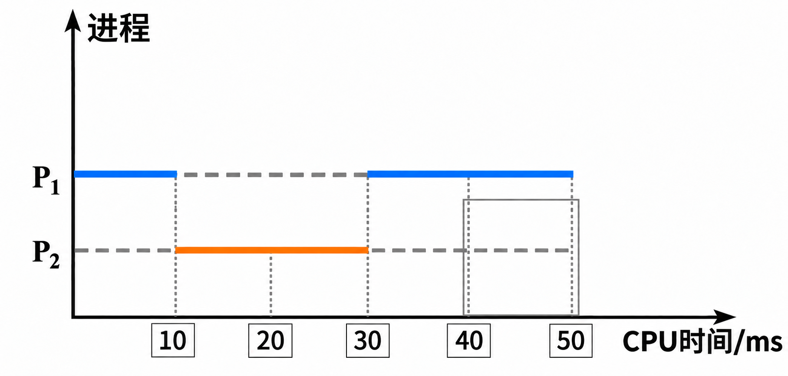
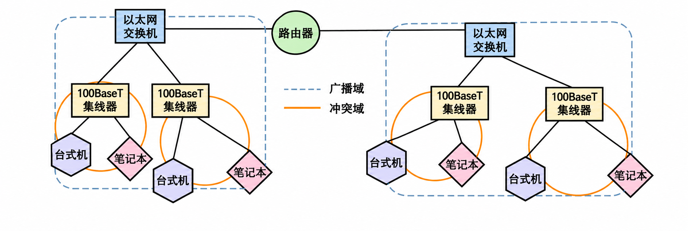
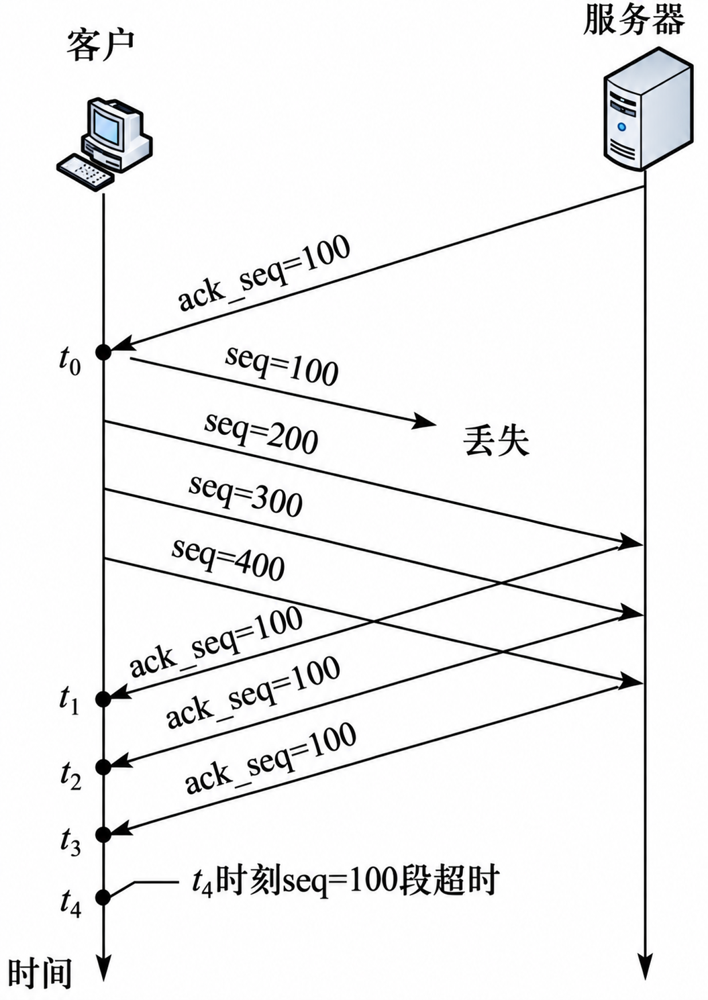
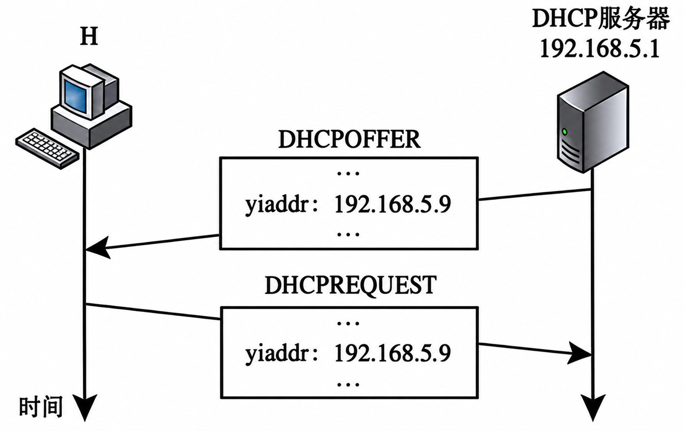
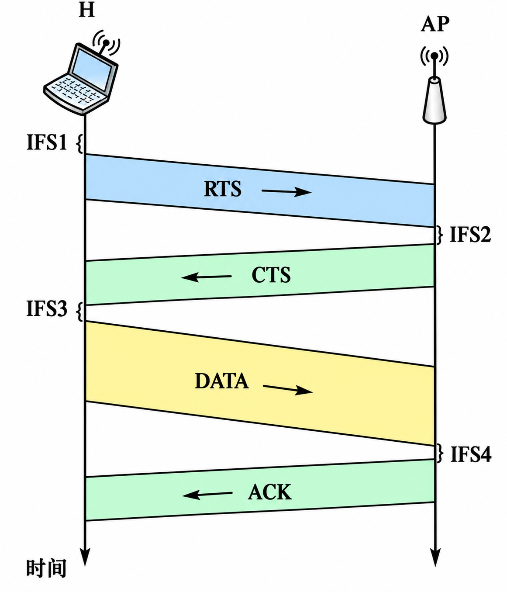
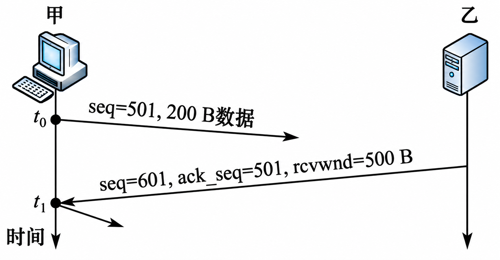
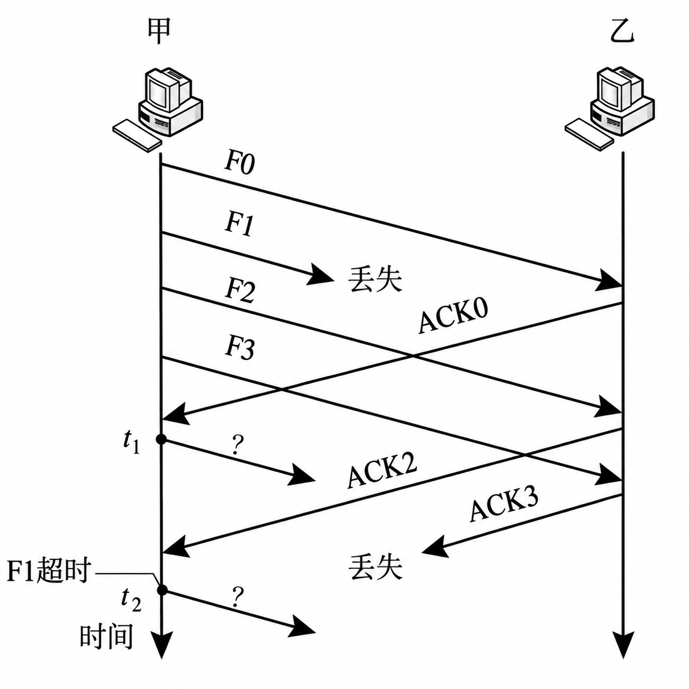
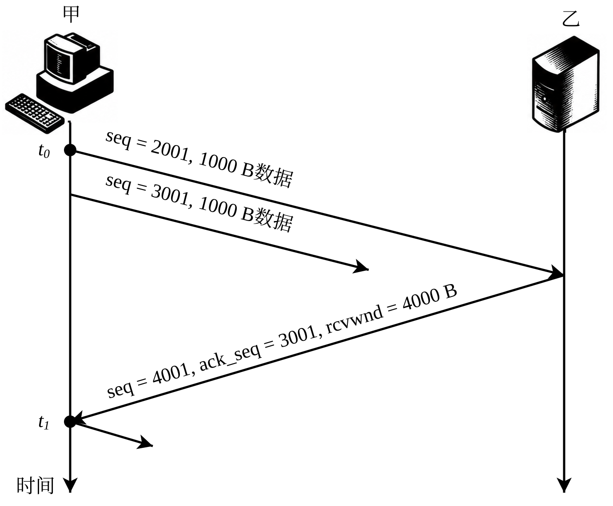
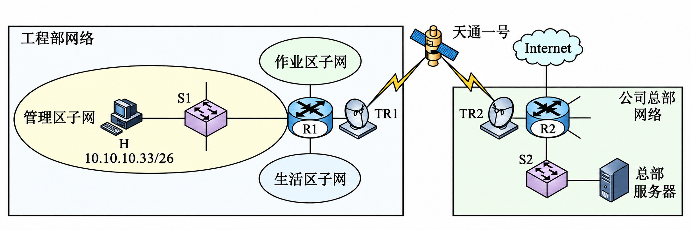

2015年12月英语六级真题(第1套)
english-cet6-2015-12-01


两人隔桌交谈，男子说每天阅读约三小时的彩色重绘漫画
图片已更新，请重新核对
共 28 张已接入的重绘图。左侧是重排页保留的原图素材，右侧是重绘图；“整页原版”可查看完整试卷。图意、遮挡关系、线型、文字、数字、箭头与结构须与原图一致。同类线条须统一用色并与图例一致；扫描造成的直线弯曲应校正。
所有条目初始为“待检查”，不代表已通过人工审计。结论和备注尝试保存在当前浏览器；建议导出一份结果。
english-cet6-2015-12-01
两人隔桌交谈，男子说每天阅读约三小时的彩色重绘漫画
图片已更新，请重新核对
english-cet6-2015-12-02


会议室里五人围绕信息技术讨论的彩色重绘漫画
图片已更新，请重新核对
english-cet6-2015-12-03


办公室里坐在电脑前的人与门口持杯者交谈的彩色重绘漫画
图片已更新，请重新核对
cet6:2012-06-01:figure-001-004


父亲在扶手椅上读报，女儿站在右侧；父亲问学校情况，女儿说可以在博客读到。
图片已更新，请重新核对
cet6:2014-12-01:figure-001-003


孩子指着黑板上的 2+2=，老师站在右侧；下方写着“I’m going to need tech support.”
图片已更新，请重新核对
cet6:2014-12-02:figure-001-004


图书馆访客手持书本，柜台后的工作人员指向右侧书架。
图片已更新，请重新核对
cet6:2014-12-03:figure-001-002


招聘者读着简历，告诉戴学位帽的求职者其他申请者都是 Ph. D. s。
图片已更新，请重新核对
cs408-2019-answers-p006-b005


第 27 题进程 \(P_1\)、\(P_2\) 调度时间图
本轮修订：补齐40—50 ms处外框四边，保留框与虚线的相对位置。
图片已更新，请重新核对
cs408-2020-answers-p007-b006


第 35 题网络拓扑及广播域、冲突域示意图
本轮修订：按原图重新描绘设备位置、域边界及遮挡；两广播域与图例使用相同蓝色虚线，冲突域与图例统一橙色实线。
图片已更新，请重新核对
cs408-2016-questions-p005-b001

题 33～41 图：路由器、交换机、集线器和主机网络拓扑
本轮修订：修正Switch顶面四支独立箭头，保持两支朝左上、两支朝右下，清除相连和不规则边缘。
图片已更新，请重新核对
cs408-2023-questions-p004-b008


第38题包含NAT路由器R2的网络拓扑
图片已更新，请重新核对
2010-complete-p004-b010


第 34 题分组交换网络拓扑
图片已更新，请重新核对
2014-complete-p002-b000


第7题有向图
图片已更新，请重新核对
2014-complete-p004-b006


题34交换机与三台主机的连接拓扑
图片已更新，请重新核对
2014-complete-p005-b009


第42题R1构造的网络拓扑
图片已更新，请重新核对
cet4:2015-06-01:figure-001-003


一名戴帽孩子拿着手机和纸张，与门边的大人交谈，旁边有一只小狗。
图片已更新，请重新核对
cet4:2015-06-02:figure-001-004


四格漫画“THIS MODERN LIFE”：工作、居家和娱乐时都在用电脑，睡觉时还梦见电脑。
图片已更新，请重新核对
cet4:2015-06-03:figure-001-003

站立女性手持纸张和倾斜信封，坐在扶手椅上的女性在阅读
本轮修订：按原图保留下方信封的倾斜外轮廓，邮票移至视觉右下，地址线改为右上至左下；上方纸张不变。
图片已更新，请重新核对
politics:2010-questions-p001-b008


一只北极熊停留在海上的小块浮冰上
图片已更新，请重新核对
english-kaoyan-2000-fishing

1900年鱼多船少、1995年船多且水下仅余一条完整小鱼的捕鱼图
本轮修订：按人工意见将1995年水下鱼骨改回一条完整的鱼，保留位置、方向与其他画面。
图片已更新，请重新核对
english-kaoyan-2001-lamp


爱心是一盏灯，在越黑暗的地方越明亮（彩色重绘）
图片已更新，请重新核对
2019-questions-p004-b011


题38 TCP数据段和确认段时序图
本轮修订：新增清晰重绘；按原图核对标注、端点和方向，并修直普通直线。
图片已更新，请重新核对
2025-questions-p004-b006


题36图 DHCP服务器与主机H之间的DHCPOFFER、DHCPREQUEST报文交互
本轮修订：新增清晰重绘；按原图核对标注、端点和方向，并修直普通直线。
图片已更新，请重新核对
cs408-2020-questions-p005-b001


2020-questions-p005-b001 真题图清晰重绘
本轮修订：新增清晰重绘；按原图核对标注、端点和方向，并修直普通直线。
图片已更新，请重新核对
cs408-2021-questions-p004-b013


2021-questions-p004-b013 真题图清晰重绘
本轮修订：新增清晰重绘；按原图核对标注、端点和方向，并修直普通直线。
图片已更新，请重新核对
cs408:2024-questions:p005-b001


2024-questions-p005-b001 真题图清晰重绘
本轮修订：新增清晰重绘；按原图核对标注、端点和方向，并修直普通直线。
图片已更新，请重新核对
cs408:2025-questions:p005-b001


2025年408第38题TCP报文时序图：精确SVG直线及文字
本轮修订：改为精确SVG：时间轴和报文均由坐标直线绘制，两条长报文共用右侧交点。文字为矢量文字，设备外观保留。
图片已更新，请重新核对
2025-questions-p012-b001


2025年408第47题：工程部网络经天通一号卫星链路连接公司总部网络
本轮修订：R1/R2按用户原样局部图修正两进两出及中央交叠，再加淡色；外框和普通连线修直，卫星折线保留。
图片已更新，请重新核对
没有符合筛选条件的插图。